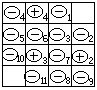

第九讲 数学游戏
游戏对策问题因常与智力游戏相结合，因此具有很大的趣味性.又由于解题方法灵活，技巧性强，所以对开阔解题思路，提高分析问题解决问题的能力是很有益处的。
例1 在一个3×3的方格纸中，甲乙两人轮流（甲先）往方格纸中填写1、3、4、5、6、7、8、9、10九个数中的一个，数不能重复.最后甲的得分是不计中间行的上下两行六个数之和，乙的得分是不计中间列的左右两列六个数之和，得分多者为胜.请你为甲找出一种必胜的策略。
分析 把题中的九个格标上字母：a、b、c、d、e、f、g、h、
i。
甲的得分为：a＋b＋c＋g＋h+i
=（a＋c＋g+i）+（b+h）；
乙的得分为：a＋d＋g＋c＋f＋i
=（a＋c＋g＋i）+（d＋f）
要想使甲的得分高于乙的得分，必须且只需使b＋h＞d+f.要想使b＋h＞d＋f，甲有两种策略：一是增强自己的实力——使b、h格内填的数尽可能地大；二是削弱对方的实力——使d、f格内填的数尽可能地小.下面分两种情况进行讨论：取胜的总策略是“增强自己，削弱对方”两者兼顾。
为了使叙述方便起见，我们分别用（甲2）和（a5）分别表示“甲第二轮”和“在a处填数字5”，其余如（乙1），（甲1，b10）等含义类同。
一、甲首先使b、h处填的数尽可能大.譬如，（甲1，b10）。
1.乙为了不输，（乙1）必须在h处填数.（否则，即如（乙1）不在h处填数，（甲2）在h处填余下来的最大数后，无论（乙2）怎么填，最后总有b＋h≥10＋8=18＞16＝9＋7≥d+f，甲胜）.这样，必须（乙1，h1）.（乙当然在h处填最小数）
2.（甲2）不能在d处或f处填数.（否则，如（甲2，dx），x为任一数，则（乙2）在f处填余下来的最大数后，即有d+f≥3＋9＝12＞11＝10＋1＝b+h，乙胜）.当然（甲2）填9，譬如（甲2，eg）.（以后，只要甲不填错，即只要把余下数中的最小者填入d或f，就不会输了）
3.显然，（乙2，d8），乙就不会输了.因此不分胜负（此时（甲3）必须（f3））。
同样，若（甲1，h10），只要乙应对正确，乙就不会输。
因此，只有
二、甲首先使d、f处填的数尽可能小（才有可能必胜）.譬如，（甲1，d1）。
1.若（乙1）不在f处填数时，（甲2）在f处填余下来的最小数，则最后必有
b＋h≥3＋5＝8＞5=1＋4≥d＋f，甲胜。
2.若（乙1，f10）（乙当然在f处填最大数），则（甲2，b9），最后必有
b＋h≥9＋3＝12＞11=1＋10=d+f，甲胜.
因此，只要（甲1，d1），且以后甲每次应对正确，则甲必胜。
解：甲第一轮采用削弱对方策略，把1填入d格（或f格）内，以后无论乙怎样填，甲第二轮“随机应变”，只要把尽可能大的数填入b或h格内，或者把尽可能小的数填入f格（或d格）内（在乙没有在f或d格内填数的情况下），甲都能获胜。
例2 在4×4的方格纸上有一粒石子，它放在左下角的方格里.甲乙二人玩游戏，由甲开始，二人交替地移动这粒石子，每次只能向上、向右或向右上方移动一格，谁把石子移到右上角谁胜.问甲能取胜吗？如果要取胜，应采取什么办法？
分析 见右图，采用倒推法.甲要取胜，就必须使乙在移动最后一次石子后，石子落在再移动一次就能移到右上角的那些方格中，即.而移动一次石子，石子必定落在这三个方格之一的方格只有和，即和必须由甲来占领。

这样，如一开始分析的那样，就必须使乙在某一次移动石子后，石子落在再移动一次就能移到或的那些方格中，即.而从哪些方格（除了和外）中移动一次石子，石子必定落在之一中呢？只有用.因此甲第一次移动石子就必须把石子从左下角移到中。
这样，所有的格子被分成“胜位”（）和“负位”（）.自然，上图中的和 也是负位.即，谁占据胜位，谁将获胜（若此后他不失误）；谁占负位，谁将失败（若此后对方不失误）。
解：由以上的分析和上图知，甲要取胜，必须向右上走一格.然后，乙如果向上走，甲也向上走；乙向右走，甲也向右走；乙向右上走，甲也向右上走.总之，甲走完第一步以后，乙朝哪个方向走，甲就朝哪个方向走，这样甲就能取胜。
如果是5×5的方格，甲要取胜，应采取怎样的策略呢？
根据例2的分析，我们仍用表示胜位，表示负位，如右图所示.因此，先移动石子者必输——第一次他只能把石子移动到负位。
例3 甲乙两人玩下面的游戏：有两堆玻璃球，一堆8个，另一堆9个，甲乙两人轮流从中拿取，每次只能从同一堆中拿，个数（＞0）不限.规定拿到最后一个球的人为输.问如果甲先拿，他有无必胜的策略？
分析 解这类题的一个常用的方法是从简单的情形讨论起，逐渐找出规律或找出解来。
为了便于叙述，我们用（m，n）表示两堆球，其中一堆有m个，另一堆有n个。
我们从最简单的情况（1，0）开始讨论。
显然，谁拿过球后两堆球成为（1，0）的状况，则对方必败，因为此时对方只有唯一的一种选择——拿走最后一个球.因此（1，0）是胜位，即谁造成这个局面谁必胜.把这种情形简记为
①（1，0），胜位。
②（a）（n，0），负位，其中n＞1；
（对方只需在n个球的那堆中拿走n—1个，对方就造出（1，0）局面，因而对方胜）。
显然，（b）（1，1），负位；
（c）（n，1），负位，其中n＞1。
（对方只需在n个球的那堆中的球全拿走，就造出（1，0）局面.）此外，
③（2，2），胜位.（对方拿走1个变（2，1），即②（c）中的情形；拿走2个变（2，0），即②（a）中的情形.对方均负）.因此
④（n，2），负位，其中n＞2。
（对方只需在n个球的那堆中拿走n—2个，对方就占据了胜位（2，2）.）
与③类似，有
⑤（3，3），胜位.（对方一次拿走任意多个后必变为②（a），②（c），④三种负位之一.）因此
⑥（n，3），负位，其中n＞3。
（对方只需在n个球的那堆中拿走n—3个，对方就占据了胜位（3，3）.）还有
⑦（4，4），胜位.（对方一次拿走任意多个后必变为②（a），②（c），④，⑥四种负位之一.）因此
⑧（n，4），负位，其中n＞4。
（对方只需在n个球的那堆中拿走n—4个，对方就占据了胜位（4，4）.）如此等等，
因此，当两堆球的个数相等但不等于1，或只有一堆球，其中只有一个球时，先拿的必输；当个数不相等但不是（1，0），或两堆各有1个球时，先拿的必胜（当为（n，0）时，拿走n-1个球；当为（n，1）时，拿走n个球；否则，从多的一堆中拿走一些，使两堆个数相等）。
解：如果甲先拿，甲有必胜的策略.甲的具体做法是：从9个球的那一堆中拿1个，使两堆球数相等，都是8个。
此后，乙从一堆中拿球，甲就从另一堆中拿.如果乙把一堆中的球全拿走，那么甲就比乙少拿一个即可（即就剩下一个球）；如果乙使得一堆球就剩下一个球，那么甲就把另一堆球都拿走；否则，当乙拿几个时，甲也拿同样多的个数.在前两种情形，因为只剩下一堆球，而且这堆中只有一个球，因此乙必输；在后一种情形两堆球的个数相同，只是比原来少了。
这样，如果每次都是后一种情形，那么甲总能使得乙面临两堆各有2个球的局面.这时，乙只有两种选择：拿2个或拿1个，然后，甲拿1个或拿2个，乙也必输。
说明：我们也可用例2的分析中的思考方法来解这道题。
先如右图画一表格.其中有“*”的格子表示两堆球的个数分别为3和5.这个方格记为（3，5）（第四行第六列）.显然.（5，3）（第六行第四列）的含义与（3，5）一样（行、列分别为从下到上、从左到右编序）.我们的问题转化为：
在（8，9）格中有一石子（即“有两堆玻璃球，一堆8个，另一堆9个”），甲乙两个轮流移动石子（即“甲乙两人轮流从中拿球”），每次只能向下或向左移动（即“每次只能从一堆中拿”），格数不限（即“个数不限”）.规定把石子移到（0，0）格（即左下角）的人为输（即“规定拿到最后一个球的人为输”）.问如果甲先移（即“甲先拿”），他有无必胜的策略？
按照例2分析中的思路，我们把解答填在右面的表格里，其中的“+”、“-”分别表示该格为“胜位”和“负位”.如，（1，0）格中的“+”表示谁把石子移动到这一格即会胜.在表格中除了（1，0），（0，1）是胜位外，其余所有的胜位为（n，n），n＝2，3，4，….而（8，9）格是负位.因此，开始时石子在（8，9）格中时，如甲先移，甲有必胜的策略，即甲必胜——把石子移到一个标有“+”的格子，即移到（8，8）格中.此时，无论乙怎样移动石子（只要按规定移），他必把石子移到负位.接着，甲又能把石子移到胜位，….最后，甲必能把石子移到（1，0）格或（0，l）格.因此甲必胜。
请同学们自己推导一下上述填“+”、“-”的过程，并把“移石子”的必胜策略“翻译”成“取玻璃球”的策略.